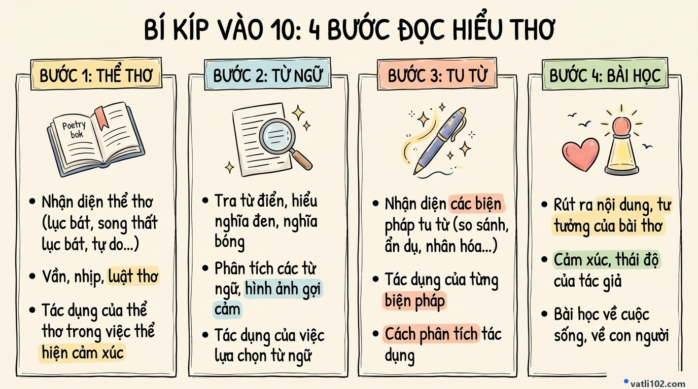

Bí Kíp Chinh Phục Đọc Hiểu Thơ Ngoài SGK Thi Vào 10: Quy Trình 4 Bước Đạt Điểm Tối Đa
Trong kỳ thi tuyển sinh vào lớp 10 môn Ngữ văn theo chương trình mới, toàn bộ phần Đọc hiểu (chiếm 3.0 điểm) đều sử dụng ngữ liệu ngoài sách giáo khoa. Điều này khiến nhiều bạn học sinh lo lắng vì không còn học tủ, học vẹt được những bài giảng quen thuộc trên lớp.
Thực tế, dù đề thi cho bài thơ lạ đến đâu, người ra đề cũng chỉ kiểm tra dựa trên các đặc trưng thể loại đã học. Dưới đây là quy trình 4 bước đọc hiểu thơ do các thầy cô tại Vatli102.com hệ thống hóa giúp các em tự tin giành trọn 3.0 điểm trong phòng thi.
1. Đề thi đọc hiểu thơ vào lớp 10 thường hỏi những gì?
Một đề đọc hiểu thơ thi vào 10 thường có 4 câu hỏi tương ứng với các mức độ từ cơ bản đến nâng cao:
- Câu 1 (Nhận biết): Xác định thể thơ, cách gieo vần, ngắt nhịp hoặc tìm từ ngữ, hình ảnh cụ thể trong đoạn thơ.
- Câu 2 (Thông hiểu): Nêu ý nghĩa của một hình ảnh thơ, hoặc chỉ ra nội dung cảm xúc của nhân vật trữ tình.
- Câu 3 (Vận dụng thấp): Nhận diện và nêu tác dụng của một biện pháp tu từ nổi bật.
- Câu 4 (Vận dụng cao): Rút ra thông điệp hoặc bài học cuộc sống mà tác giả gửi gắm.
2. Sơ đồ tư duy: 4 Bước giải mã bài thơ ngoài SGK

3. Hướng dẫn chi tiết từng bước làm bài
BƯỚC 1: XÁC ĐỊNH THỂ THƠ & VẦN NHỊP (0.5 điểm)
- Đếm số chữ: Hãy đếm kỹ số chữ ở 3 – 4 dòng thơ liên tiếp. Nếu các câu đều đặn 4, 5, 7, 8 chữ thì đó là thể thơ tương ứng; nếu số chữ dài ngắn linh hoạt không cố định thì đó là Thơ tự do; nếu câu 6 xen câu 8 thì là Thơ lục bát.
- Cách trình bày: Trả lời ngắn gọn, trực diện: "Đoạn thơ trên được viết theo thể thơ: Tự do (hoặc Năm chữ)."
BƯỚC 2: PHÂN TÍCH HÌNH ẢNH & TỪ KHÓA (0.5 – 1.0 điểm)
- Gạch chân các từ láy tượng hình, tính từ gợi cảm giác hoặc động từ mạnh trong câu thơ.
- Phân biệt 2 tầng nghĩa: Nghĩa thực (miêu tả cảnh vật thiên nhiên bên ngoài) và Nghĩa biểu tượng (thể hiện tâm trạng, suy tư của tác giả).
BƯỚC 3: PHÂN TÍCH BIỆN PHÁP TU TỪ THEO CÔNG THỨC 3 VẾ (1.0 điểm)
Khi gặp câu hỏi về biện pháp tu từ, các em nhớ trả lời đầy đủ theo 3 vế để không bị trừ điểm:
• Vế 1 (Chỉ rõ): Nêu tên biện pháp tu từ + trích dẫn từ ngữ thể hiện trong ngoặc kép.
• Vế 2 (Gợi hình): Biện pháp đó giúp làm nổi bật, nhấn mạnh đặc điểm hoặc vẻ đẹp gì của hình ảnh thơ?
• Vế 3 (Gợi cảm): Thể hiện tình cảm, thái độ gì của tác giả? (Lòng yêu thương, niềm kính trọng, nỗi nhớ quê hương...).
BƯỚC 4: RÚT RA THÔNG ĐIỆP BÀI HỌC (0.5 – 1.0 điểm)
Viết một đoạn ngắn từ 3 đến 5 câu nêu rõ: Thông điệp em tâm đắc nhất là gì? Vì sao thông điệp đó có ý nghĩa? Em sẽ vận dụng điều đó vào cuộc sống của bản thân như thế nào?
4. Đề luyện tập thực tế & Đáp án tham khảo
Bằng tiếng ru của mẹ bên cánh võng
Cánh cò trắng bay qua miền đất rộng
Chở giọt mồ hôi mặn chát tháng ngày...
Mai con lớn đi khắp bốn phương trời
Vẫn mang theo hơi ấm bàn tay mẹ
Dẫu bão giông cuộc đời xô nghiêng ngả
Mẹ vẫn là bến đỗ bình yên nhất."
(Trích Lời ru của mẹ — Ngữ liệu mở ngoài SGK)
- Câu 1 (0.5đ): Thể thơ của đoạn trích: Thơ tám chữ (hoặc Thơ tự do).
- Câu 2 (0.5đ): Hình ảnh người mẹ được thể hiện qua các chi tiết: tiếng ru bên cánh võng, giọt mồ hôi mặn chát, hơi ấm bàn tay, bến đỗ bình yên nhất.
- Câu 3 (1.0đ): Biện pháp tu từ ẩn dụ trong câu thơ "Mẹ vẫn là bến đỗ bình yên nhất":
• Gọi tên: Biện pháp ẩn dụ qua hình ảnh "bến đỗ bình yên nhất".
• Tác dụng gợi hình: Khắc họa hình ảnh người mẹ là điểm tựa tinh thần vững chãi, luôn che chở và đón nhận con trở về sau những vấp ngã ngoài cuộc đời.
• Tác dụng gợi cảm: Bộc lộ lòng biết ơn sâu nặng, tình yêu thương và niềm tin tưởng trọn vẹn của người con dành cho mẹ. - Câu 4 (1.0đ): Thông điệp ý nghĩa nhất: Đoạn thơ nhắc nhở mỗi chúng ta về sự thiêng liêng của tình mẫu tử và công ơn dưỡng dục của cha mẹ. Dù sau này khôn lớn đi đến bất cứ đâu, con người cũng cần biết trân trọng cội nguồn, luôn ghi nhớ gia đình và biết ơn những hy sinh thầm lặng của mẹ.
5. Bảng tra cứu: Tác dụng đặc trưng của các biện pháp tu từ
| Biện pháp tu từ | Dấu hiệu nhận diện | Tác dụng gợi hình và gợi cảm thường gặp |
|---|---|---|
| So sánh | Có các từ: như, là, tựa, chẳng bằng... | Làm hình ảnh thơ trở nên cụ thể, sinh động; giúp người đọc dễ hình dung cảm xúc. |
| Ẩn dụ | Gọi tên sự vật này bằng tên sự vật khác có nét tương đồng. | Tạo tính hàm súc, gợi chiều sâu suy tưởng và triết lý nhân sinh. |
| Nhân hóa | Gán hành động, tâm trạng con người cho sự vật. | Làm cảnh vật thiên nhiên trở nên sống động, có hồn và đồng điệu với tâm trạng tác giả. |
| Điệp từ / Điệp ngữ | Lặp lại từ ngữ nhiều lần trong dòng hoặc đoạn thơ. | Nhấn mạnh cảm xúc tha thiết, tạo nhịp điệu dồn dập cho lời thơ. |
| Tương phản / Đối lập | Đặt các hình ảnh trái ngược nhau cạnh nhau. | Làm nổi bật sự khác biệt, nhấn mạnh sự hy sinh hoặc hoàn cảnh khó khăn của nhân vật. |